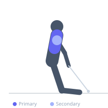
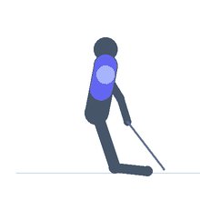

Exercise guide / Kneeling Cable Crossover
Kneeling Cable Crossover
A cable crossover performed in a kneeling position rather than standing. Kneeling eliminates the ability to use leg drive or hip momentum, ensuring the work is isolated to the chest and shoulders. It also changes the cable angle relative to the torso, shifting the tension vector to better align with horizontal chest fiber recruitment.
Primary muscles
pectoralis major sternal
Secondary muscles
deltoid anterior
Stabilizers
transverse abdominis
internal oblique
Equipment
Cable Machine (Dual Pulley / Functional Trainer)


Starting position
- Kneel centered between two cable stacks with both pulleys set to high or shoulder height relative to the kneeling position. Hold one handle in each hand with arms extended to the sides.
Setup
- Set pulleys to approximately shoulder height when kneeling. Kneel on a mat for comfort. Have handles already attached before kneeling.
Steps
- Step 1: Kneel upright between the stacks. Arms extended out to the sides with a slight elbow bend, cables taught.
- Step 2: Bring both handles together in front of the chest in a sweeping arc — the crossover motion.
- Step 3: At the midpoint, hands cross slightly (crossover) and squeeze the chest.
- Step 4: Return under control, letting the handles sweep back to the starting position. Alternate which hand crosses on top.
Coaching cues
- Lead with the elbows, not the hands — this keeps the chest driving the motion
- Stay tall through the knees — do not lean forward
Breathing
- Exhale on the crossover contraction, inhale on the return.
Range of motion
- Full sweep from arms extended sideways to full crossover in front. Avoid letting cables pull arms behind the torso plane.
Tempo
- 2-1-2-1 (2s sweep in, 1s cross squeeze, 2s return, 1s reset)
Common mistakes
- Leaning forward excessively from the hips — stay upright
- Bending elbows too much and turning it into a press
- Cables pulling the arms too far back past the torso plane
Safety
- Kneel on a padded surface for comfort
- Keep the core braced to prevent excessive anterior pelvic tilt while kneeling
Training
- hypertrophy: 10–15 reps
- endurance: 15–20 reps
- hypertrophy: 3–4 sets
- Rest: {'hypertrophy': 75}